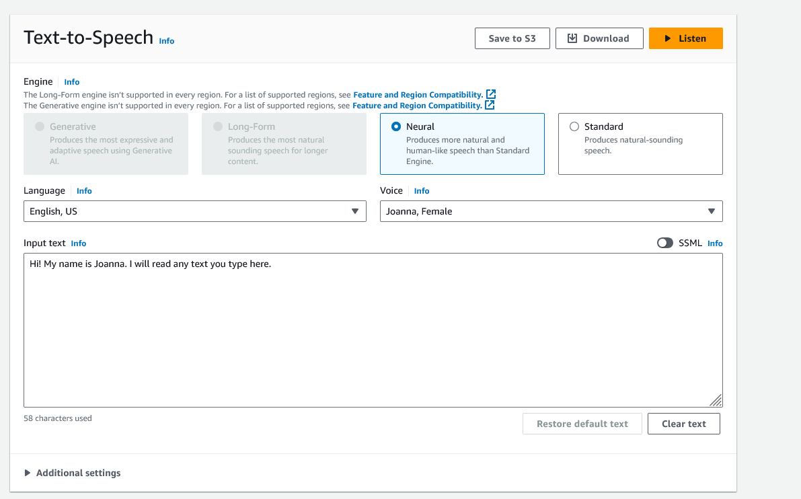

Amazon Polly
Getting Started with Polly

Comparison of the Amazon Polly voice engines
| Feature | Generative | Long-Form | Neural | Standard |
|---|---|---|---|---|
| Description | Most human-like, emotionally engaged, and adaptive. | Designed for longer content with high expressiveness. | Utilizes deep learning for natural speech synthesis. | Basic text-to-speech synthesis. |
| Technology | Large Language Model (LLM) with a billion-parameter transformer. | Deep learning model for phonemes and prosody. | Neural TTS (Text-to-Speech) technology. | Rule-based TTS technology. |
| Use Cases | Virtual assistants, trainers, and advertising. | News articles, training materials, marketing videos. | Interactive applications, newscasters, customer service. | General purpose, wide variety of applications. |
| SSML Support | Limited SSML support. | Supports many (but not all) SSML tags. | Full SSML support. | Full SSML support. |
| Audio Output Formats | MP3, OGG, PCM with 24 kHz default sampling rate. | MP3, OGG, PCM with 24 kHz default sampling rate. | MP3, OGG, PCM with various sampling rates. | MP3, OGG, PCM with various sampling rates. |
| Voice Options | 2 Female, 1 Male (English) | 2 Female, 1 Male (English US) | Multiple voices in various languages. | Multiple voices in various languages. |
| Region Availability | Limited to US East (N. Virginia) and Europe (Frankfurt). | US East (N. Virginia) only. | Widely available across multiple AWS regions. | Widely available across multiple AWS regions. |
| Pricing | Higher cost, details on Amazon Polly pricing page. | Higher cost, details on Amazon Polly pricing page. | Varies by voice and usage; generally higher than Standard. | Lower cost compared to other engines. |
| Other Features | No support for newscaster style, potential for slight variations in voice with model updates. | Supports real-time and asynchronous synthesis, designed for long-form content. | Supports newscaster style, bilingual voices available. | No special features. |
SSML and Amazon Polly
Speech Synthesis Markup Language (SSML) allows you to control various aspects of speech synthesis with Amazon Polly, such as pronunciation, intonation, volume, pitch, and speaking rate. Here are some examples of how you can use SSML with Amazon Polly
- Examples
<speak>
Hello, welcome to the world of <emphasis>text-to-speech</emphasis>!
</speak>
<speak>
This is a normal speaking rate.
<prosody rate="slow">This is a slow speaking rate.</prosody>
<prosody rate="fast">And this is a fast speaking rate.</prosody>
</speak>
<speak>
<prosody pitch="high">This is a high pitch.</prosody>
<prosody pitch="low">This is a low pitch.</prosody>
<prosody volume="x-loud">This is very loud.</prosody>
<prosody volume="soft">This is soft.</prosody>
</speak>
<speak>
This is a sentence with a short pause.
<break time="500ms"/>
This sentence comes after a half-second pause.
</speak>
Lexicons
Lexicons in Amazon Polly are custom pronunciation dictionaries that allow you to control how specific words are pronounced during speech synthesis. They are especially useful when dealing with proper nouns, technical jargon, or any other words that may not be pronounced correctly by default. By creating a lexicon, you can ensure that Amazon Polly reads these words accurately according to your requirements. A lexicon is an XML file that specifies pronunciation instructions for words or phrases. It uses the Pronunciation Lexicon Specification (PLS) format, which is a standard defined by the W3C. A lexicon can include:
- Phonetic Transcriptions: Specifies the pronunciation of a word using phonetic alphabets like the International Phonetic Alphabet (IPA) or X-SAMPA.
- Alternative Pronunciations: Provides multiple pronunciations for a word, which can be selected based on the context.
- Alias: Maps a word to a different pronunciation or a synonym.
<?xml version="1.0" encoding="UTF-8"?>
<lexicon version="1.0"
xmlns="http://www.w3.org/2005/01/pronunciation-lexicon"
alphabet="ipa"
xml:lang="en-US">
<lexeme>
<grapheme>Amazon</grapheme>
<phoneme>ˈæməzɒn</phoneme>
</lexeme>
<lexeme>
<grapheme>Polly</grapheme>
<phoneme>ˈpɒli</phoneme>
</lexeme>
</lexicon>
Lexicons in Amazon Polly are custom pronunciation dictionaries that allow you to control how specific words are pronounced during speech synthesis. They are especially useful when dealing with proper nouns, technical jargon, or any other words that may not be pronounced correctly by default. By creating a lexicon, you can ensure that Amazon Polly reads these words accurately according to your requirements.
Upload the Lexicon to Amazon Polly: - You can upload the lexicon using the AWS Management Console, AWS CLI, or SDKs. - AWS CLI Command Example:
```sh
aws polly put-lexicon --name MyLexicon --content file://mylexicon.xml
```
- This command uploads a lexicon named "MyLexicon" from a local file
mylexicon.xml.
Referencing Lexicons in Speech Synthesis Requests: - After uploading, you can reference the lexicon in your speech synthesis requests. - Here is an example using SSML:
```xml
<speak>
Using a lexicon to correctly pronounce the words:
<lexicon uri="https://polly.us-east-1.amazonaws.com/v1/lexicons/MyLexicon"/>
Welcome to Amazon Polly, your speech synthesis service.
</speak>
```
- In this example, the
<lexicon>tag refers to the lexicon "MyLexicon" hosted on Amazon Polly. Polly uses this lexicon to pronounce the words defined in it.
Managing Lexicons: - You can list, delete, or update lexicons using the AWS Management Console, AWS CLI, or SDKs. - List Lexicons Example (AWS CLI):
```sh
aws polly list-lexicons
```
- This command lists all the lexicons associated with your AWS account in the region.
Benefits of Using Lexicons
- Customization: Lexicons allow you to tailor speech synthesis to better match the pronunciation needs of your content, making it sound more natural and accurate.
- Consistency: Ensures consistent pronunciation of specific words across different Polly voices and engines.
- Flexibility: Useful for applications that involve domain-specific language, names, acronyms, or uncommon words.
Practical Applications
- Corporate Branding: Ensuring company names and products are pronounced correctly.
- Educational Tools: Customizing pronunciation for educational content, like language learning apps.
- Accessibility: Improving speech output for screen readers or other assistive technologies by providing correct pronunciations.
Quotas
Lexicon Operations
| Operation | Limit |
|---|---|
| DeleteLexicon, PutLexicon, GetLexicon, | 2 transactions per second (tps) combined; max burst of 4 tps |
| ListLexicons |
Speech Operations
| Operation | Limit |
|---|---|
| DescribeVoices | 80 tps with a burst limit of 100 tps |
| SynthesizeSpeech | Generative voice: 8 tps; Long-form voice: 8 tps with a burst limit of 10 tps; Neural voice: 8 tps with a burst limit of 10 tps; Standard voice: 80 tps with a burst limit of 100 tps |
| StartSpeechSynthesisTask | Generative voice: 1 tps; Long-form voice: 1 tps; Neural voice: 1 tps; Standard voice: 10 tps with a burst limit of 12 tps |
| GetSynthesizeSpeechTask and ListSynthesizeSpeechTask | Maximum 10 tps combined |
| Concurrent Requests | Generative voice: up to 26 concurrent requests; Long-form voice: up to 26 concurrent requests; Neural voice: up to 18 concurrent requests; Standard voice: up to 80 concurrent requests |
Pricing
- Pricing Based on Voice Type
Amazon Polly offers four types of voice engines, each with different pricing:
Standard Voices:
Pricing: Lower cost per million characters.
Usage: Suitable for basic text-to-speech applications. These voices are less natural compared to neural voices but are more cost-effective.
Neural Voices (NTTS):
Pricing: Higher cost per million characters than standard voices.
Usage: Offers more natural and human-like speech. Neural Text-to-Speech (NTTS) is ideal for applications requiring high-quality voice output, such as voice assistants and interactive applications.
Long-Form Voices:
Pricing: Similar to neural voices, generally higher due to their enhanced quality and suitability for longer content.
Usage: Optimized for reading long passages, such as articles or books, providing natural-sounding speech for extended listening.
Generative Voices:
Pricing: Generally the highest cost due to their advanced capabilities and adaptive, human-like speech patterns.
Usage: Best for applications needing highly interactive or emotionally engaging speech, such as virtual assistants or personalized content delivery.
- Character Count for Pricing
Amazon Polly pricing is based on the number of characters processed:
Character Count:
Each character used in your input text (including spaces and punctuation) counts towards your character usage.
SSML tags are not counted in the character count unless they modify the output (e.g., <break> tags are not counted, but <emphasis> is).